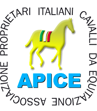
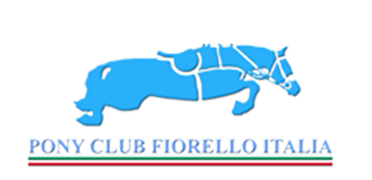
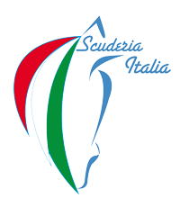

C a r r i e r a
Figlio di industriali, nacqui a Cassano Magnago, in provincia di Varese, nel 1938, iniziando a montare già all’età di 9 anni. La mia vita è sempre stata dedicata per metà all’equitazione e per l’altra metà alla professione di industriale. In entrambe le situazioni, sono sempre stato orientato alla ricerca, all’organizzazione, alle innovazioni e ad un lavoro concentrato su obiettivi specifici.
Carriera sportiva: SALTO OSTACOLI
* Campione Italiano nel 69 a Roma
* Vice campione italiano nel 71 a Salice Terme
* Vice campione italiano nel 74 a San Remo
* Medaglia di bronzo a Squadre alle Olimpiadi di Monaco del 72
* Quarto individuale al Campionato Europeo di Hickstead del 73
* Quinto a Squadre al Campionato Europeo di Monaco del 75
* Vincitore di 15 Coppe delle Nazioni
* Vincitore di Gran Premi e Coppa vincitore
CSI Vienna
CSI Zuidlarem
CSI Basilea
CSI San Gallo
CSIO Aachen
CSIO Roma
* Vincitore di varie potenze tra le quali
CSI Vienna
CSI Zuidlaren
CSI Berlino
CSI Milano
CSI Dublino
Terminata la carriera di cavaliere, mi sono sempre dedicato ad aiutare l’Equitazione Italiana sia privatamente che come Tecnico Fise, per poter restituire agli altri quello che io stesso avevo ricevuto da questo sport.
* Fondatore del Pony Club Fiorello Italia nel 77 e fondatore del Pony Club Italiano nell’85.
Sono stato il primo a portare questa specialità, praticata in alcuni paesi come Inghilterra, Irlanda, Belgio, Olanda, Francia e Germania, in Italia, facendo nascere il primo Pony Club a Casorate Sempione, promuovendo la nascita di altri Pony Club e creando poi, il Pony Club Fiorello Italia (in memoria del mio cavallo Fiorello con il quale il Col. Raimondo D’Inzeo partecipa alle Olimpiadi di Monaco nel ‘72). La Federazione (Presidente dott. Sordelli e poi ing. Checcoli) diede fiducia a questa nuova iniziativa e così, per vari anni, gestimmo il mondo Pony riportando varie medaglie agli Europei di completo e l’unica sino ad oggi d’oro nel salto ostacoli.
* 1984-1985 Responsabile e Tecnico del Salto Ostacoli (Presidente Fise dott. Sordelli)
Nell’85, dopo sei mesi di gestione, riporto la vittoria della Squadra Italiana nella Coppa delle nazioni di Roma.
* Coordinatore dei Direttori di Campo in seno alla Federazione per otto anni circa, cercando di adeguare la nostra tecnica di costruzione dei percorsi a quella straniera e producendo una regolamentazione specifica per la carriera dei Direttori di campo.
* Nel ’97 Coordinatore Tecnico del Salto Ostacoli con il Presidente Croce, riportando in pochi mesi il primo posto nelle gare a Squadre nella prestigiosa Samsung Cup.
* Presidente e fondatore dell’Associazione AICO (Associazione Italiana dei Comitati Organizzatori) nel ‘98.
* Presidente e fondatore dell’Associazione APICE (Associazione Italiana Proprietari Cavalli da Equitazione).
Con questa Associazione ho realizzato diversi progetti:
- la Notte degli Oscar Apice (con presenze di oltre 300 persone all’anno) con le premiazioni dei Proprietari.
- la realizzazione con Bayer di un film contro il doping equestre (“L’amico segreto”) divulgato a tutti gli associati (con una successiva collaborazione con San Patrignano per la divulgazione del marchio Drugs Off sempre in difesa dello sport pulito).
- il marchio Ride Fair che contraddistingue oggi quei ragazzi con stile, amore per i cavalli, correttezza verso terzi e onestà per lo sport.
- Scuderia Italia (ultima iniziativa di Apice nata dopo il “caso Seldana”, come risposta al problema del potere d’acquisto che ha visto vendere i pochi cavalli d’importanza mondiale. Scopo, quello di stimolare i Proprietari a fare Gruppo in una Società che funge come fondo d’investimento per acquistare cavalli con la caratteristica però che gli stessi non possono essere venduti se non dopo l’Olimpiade alla quale possono partecipare per età e preparazione adeguata. Oggi quattro cavalli attualmente rappresentano Scuderia Italia.
* Proprietario del cavallo Gandini Lianos che nel 1998 ha vinto il Mondiale a Roma.
* Ho dato i miei cavalli da montare a molti cavalieri italiani: Nuti, Baroni, Bologni, Arioldi, Palmizi, Moyersoen ecc.
Attualmente mi occupo molto del settore giovanile, dando i miei cavalli a dei giovani di talento che non possono permettersi dei cavalli importanti da campionato Europeo. Con loro (Filippo Codecasa e Matias Alvaro) ho vinto tre medaglie d’oro, una d’argento (Campionato Italiano) e un oro e un argento ai Campionati Europei.
* Presidente onorario di ClassHorseTV (2010-2013)
* Socio e fondatore della rivista Cavalli Campioni
* Proprietari del Centro Ippico di Castellazzo, ex scuderia del Cav. Graziano Mancinelli
* Consigliere dell’Accademia Caprilli fondata dall’Ing. Checcoli
* Primo Volto dell’Equitazione 2013
Tutte queste attività sono nate da idee volte a colmare le lacune del “sistema equitazione italiano” sperando che la Federazione le facesse diventare poi d’interesse Nazionale. E’ così fu con i Pony e con i Proprietari che oggi hanno un rappresentante sia nel Consiglio Federale Nazionale e in tutti quelli regionali.


